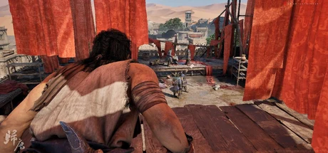

网易临安24工作室（《永劫无间》同工作室）开发的晚唐题材单机动作冒险 3A，取材真实历史「沙州归唐」，胡志鹏任制作人，潜行暗杀+近战缠斗。
想象你站在公元848年的河西走廊——脚下这片土地，已经在吐蕃手里陷了六十多年。这一年，沙州的义士反了，光复了。可捷报要送回三千里外的长安。天上是李白写过的「长风几万里」，地上是漫天黄沙、戈壁、冰川朔风和吐蕃屠杀式的搜捕。这里没有神仙妖魔，没有武功盖世——这是一段严肃写实的历史，一曲献给无名英雄的挽歌。你叫裴长关，一个久经沙场的老兵，如今是十队报捷信使里的一员。
你怀里揣的，是那封写着「河西归唐」的密信。可你心里还揣着一件事——你的儿子阿宁，那孩子信了「河西归唐就能守住小家」这句话，瞒着你离家投了义军。所以这条路你走得比谁都拧巴：一边是必须送到长安的家国大义，一边是必须活着带回家的亲生骨肉。你不是英雄，你没学过武，遇上成群的吐蕃兵，你能做的就是躲、是偷袭、是抓起地上的石头以命相搏——像个真正的普通人那样，狼狈地活下去。
可这条路的尽头，藏着史书早已写好的残酷：十队信使，最终只有一队活着抵达长安——你会是那一队吗？那个笃信「归唐就能守住小家」的儿子，当他亲眼看见战争真正的模样，还守得住那份天真吗？而你怀里这封信，值不值得用一个父亲和一个儿子的命去换？这不是一个关于收复河西的宏大史诗，是一个关于「一个普通父亲，如何在时代的碾轮下护住怀里最后一点东西」的故事——长风几万里，吹不散的，是你要把捷报和孩子一起带回家的那口气——可这条路的尽头，等你的到底是团圆，还是史书早写好的九殁蕃戎？
「晚唐河西写实」，是把敦煌壁画的厚重考据和大漠孤烟的苍凉地理缝进一段东归死路的美学。底子是极限的历史写实——高度还原河西走廊的地貌、晚唐的服饰习俗，主角是个饱经风霜的中年老兵，一把打破古风游戏「美型男主」的套路。这里没有一丝玄幻，变异不在超自然，而在把「无名小人物」放进宏大历史里的视角选择。色彩上以戈壁的冷黄沙调撞朔风冰川的青白为骨。整体调性苍凉、克制、悲壮，像一部走路的史诗电影。
「电影化叙事型 3A」这套美学有清晰的传承。2010 年代，顽皮狗用《神秘海域4》和《最后生还者》把「操作与过场无缝衔接、流程即电影」的叙事语法推到行业标杆——归唐的镜头调度被机核直接对标《神秘海域4》。2020 年《对马岛之魂》证明了东方历史题材也能用这套语法做出诗意，主角的马战镜头被玩家拿来类比。2024 年《黑神话：悟空》则证明了国产单机 3A 的工业可行性——归唐与它常被媒体作「战斗工业化 vs 叙事工业化」的赛道互补对比。归唐把这条线接到一个极冷门的题材上：晚唐归义军的东归悲剧，用敦煌壁画的考据填满每一帧，赌的是国产叙事型 3A 的这一票。
基于体验清单 · 审美偏好 · IP故事三维度综合选出
点击链接跳转到对应平台查看 · 仅整理外部链接